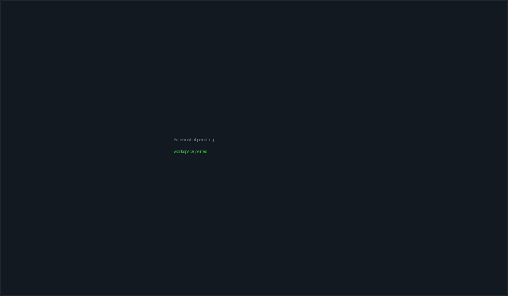

Core concepts#
PacketBench has a lot of surface, and most of the confusion people hit comes from two nouns that sound alike meaning different things. This page defines the vocabulary once, says which layer owns each thing, and shows where each one is persisted.
The one distinction worth internalising first: a session is a terminal running a CLI; a conversation is a structured chat with an API provider. They are different objects with different lifecycles, different storage, and different failure modes. Almost nothing is shared between them except the workspace they sit in.
The shape of it#
Workspace (a project + a pane layout)
├── Pane kind: "terminal" → PTY session
├── Pane kind: "conversation" → Conversation (by id)
└── Pane kind: "file" → file viewer
Conversation ──uses──► Agent row ──resolved by──► Profile
│ (9 picker rows, (prompt + tools +
│ 3 transports) posture + model pin)
│
└──may run in──► Worktree (.pkt-worktrees/<id> on branch pkt/<id>)
Flight (the unit of work)
├── Milestones → Tasks
├── Issues (issue.flightId is authoritative)
└── Attempts ── one per selected agent, each in its own Worktree,
each backed by an API-agent session
Memory (per scope)
├── Memory events session_completed / flight_completed / manual_note
├── Learned patterns distilled from event summaries, with confidence
└── Project notes Markdown in <project>/.agents/memory
Server (SSH) ── backs remote workspaces, remote agent tools,
and remote worktree attempts
MCP server ── tool provider, global or project scopePlaces to work#
Workspace#
A workspace is a project workroom: a name, a project path, an execution target (local or an SSH server), and a saved pane layout. It is the unit you open and close.
Workspaces hydrate dormant. Opening the app launches nothing; opening a specific workspace starts that workspace's panes. Once running, its PTYs survive normal navigation away.
A workspace may carry a serverId and remoteProjectPath instead of running
locally — see SSH remote workspaces.
Pane#
A pane is one tile in the workspace's draggable mosaic. kind is the sole
discriminant and takes three values:
kind |
What it renders | Points at |
|---|---|---|
terminal |
an xterm.js terminal on a real PTY | sessionId |
conversation |
a conversation tile | conversationId |
file |
a read-only file/Markdown viewer | filePath |
The reference direction is always pane → conversation, never the reverse. A
conversation pane that loses its conversationId self-heals into a plain
terminal pane rather than rendering broken, which is also how an older binary
degrades when it reads a newer layout.
PTY session#
A PTY session is a real pseudo-terminal child process, created through
create_pty_session and driven with write_pty / resize_pty / kill_pty.
Only an allowlisted program may be launched: the agent CLIs claude, codex,
opencode, packetcode, plus shells (bash, sh, zsh, powershell,
pwsh, cmd, wsl, fish, nu, xonsh) and ssh.
Sessions are what the CLI's own TUI runs inside. PacketBench does not parse or mediate them; it hosts them, records a transcript, and reads a status line.
Agents#
Conversation#
A conversation is a durable, structured exchange with an API provider: streamed assistant text, tool calls, permission prompts, pending edits, plans, and a review surface. It has an id that outlives any pane, so the same conversation can be opened in Agents, docked in a workspace, or routed to the read-only Monitor window.
Every conversation, whichever provider serves it, emits the same
api-agent:{kind}:{sessionId} Tauri events. See
Agent event contract.
Agent row#
An agent row is one entry in the provider picker — the thing you choose when starting a conversation. There are nine, spread across three transports:
| Transport | Rows |
|---|---|
In-process Rust LlmProvider |
Claude (API), OpenAI (API), MiniMax, OpenRouter, Ollama, Custom endpoint |
| Node sidecar | Claude Agent SDK (API), OpenAI Agents SDK (API) |
| ACP subprocess | PacketCode (ACP) |
Each row has an internal AgentCli id that persisted conversations store
verbatim. Two of those ids are historical and misleading if read literally:
api-claude-oauth is the Claude Agent SDK on an Anthropic API key, not an
OAuth row, and api-openai-codex is a removed row that older conversations may
still name. Full detail in Agents & conversations.
Never derive a backend provider id by stripping api- from an
agent row id. It looks correct and is wrong for the default row. A
repository fence fails the build if you try — see
Invariants & tripwires.
Profile#
An agent profile is a reusable bundle of launch settings: a system prompt,
an allowed-tools list (or null for all tools), whether memory is injected,
the permission posture, whether to start in plan mode, and an optional pinned
model that overrides whatever the launcher's dropdown last selected. Default,
Scout and Reviewer ship built in; you can add your own.
A profile is how an agent behaves. An agent row is which provider serves it. They compose.
Work#
Flight#
A Flight is the top-level organiser above issues and sessions: a title, an objective, a project path, a status, a priority, milestones with tasks, linked issues, linked sessions, cost and token rollups, and — for the parallel mode — a list of attempts.
Planning a Flight is an ordinary read-only agent conversation. The Flight's
planningConversationId links it, and the plan is applied from a structured
packetbench-flight-plan block that you accept. There is no autonomous
planner; that runtime was removed in July 2026 and is not coming back.
Mission is the old name for a Flight. It survives only as
read-side compatibility aliases in persisted data (a missionId key is
canonicalised to flightId on first save). Use Flight in anything new.
The user-facing surface is called the Flight Deck; the route is
flights.
Attempt#
An attempt is one agent's independent shot at a Flight's prompt. Launching selects one or more executors — local or SSH — and creates one attempt per executor. Each attempt records its target, agent row, model, resolved backend provider, branch, base branch, backing session id, status and timings.
Attempts are always user-launched. The Rust side owns their lifecycle and cost fields; when the frontend merges a snapshot it must preserve them.
Worktree#
A worktree is a real git worktree that isolates an agent's writes from your main checkout. Two things create them:
- an attempt, at
<base>/.pkt-worktrees/<attemptId>on branchpkt/<attemptId>; - a conversation with the worktree toggle on, at
.pkt-worktrees/<conversationId>on branchpkt/<conversationId>.
Cooperative Flights additionally converge accepted work on an integration
branch under .pkt-flight-integrations/.
Issue#
An issue is a kanban card: title, body, status column, priority, labels,
epic, acceptance criteria, dependencies, comments, and an optional flightId.
Issues sync with GitHub and with self-hosted Gitea/Forgejo.
issue.flightId is the authoritative side of the Flight↔Issue
link. flight.issueIds is rebuilt from the issue records on every hydrate,
so writing only to the flight silently loses the link. Always call
issueStore.assignToFlight; flightStore.addIssueToFlight is the optimistic
paint, not the record.
Memory#
Memory is three distinct things that are easy to blur together. See Memory for the user view and Memory internals for the mechanism.
Memory event#
A memory event is an immutable record that something happened, stamped with
a scope key and a timestamp. Four types exist: session_completed,
flight_completed, manual_note, and the legacy read-only task_completed.
A session event is written before any summarisation runs, with summary: null. Enrichment — reading the transcript, asking a model for a summary — is a
second, best-effort phase that patches the existing event in place. If the
model is unreachable, the event is still there.
Learned pattern#
A learned pattern is a short convention distilled from a batch of event
summaries, categorised (architecture, convention, preference, pitfall),
carrying a confidence score, and optionally pinned. Patterns are the main thing
injected into an agent's system prompt.
Project note#
A project note is a durable Markdown file in <project>/.agents/memory,
with frontmatter for its id, title, tags and provenance. Notes are files you
own: they live in your repository, diff in review, and travel with the code.
PacketBench never writes to .gitignore, and merely opening a project or
watching it for changes never creates .agents/memory — only an actual note
write does.
Scope#
A scope is what a memory record is filed under. It resolves to a single string key through one write choke point:
| Scope kind | Key |
|---|---|
| local | the plain filesystem path, unchanged |
| ssh | ssh:<serverId>:<normalized remote path> |
A third form, workspace:<workspaceId>, is matched on read but deliberately
never written, so workspace-pinned memory can be adopted later without
invalidating anything already recorded.
Memory has two scorers with similar names and opposite jobs.
corpusRelevanceScores powers search and is permissive.
relevanceScores decides what is injected into a prompt and is
deliberately narrow. Widening search must never widen injection.
Connections#
MCP server#
An MCP server is an external tool provider a conversation can be given access to. Servers are read from two scopes:
| Scope | File |
|---|---|
| global | ~/.claude/settings.json |
| project | <project>/.mcp.json |
The header badge shows N/M enabled servers and lets you toggle them per
conversation. Trust — which servers, tools and roots a session may use — is
frozen as a snapshot at session start, so editing Settings mid-session cannot
silently widen an already-running agent's authority.
PacketBench is also an MCP provider: it publishes its own resources to other clients. See MCP hub.
Server (SSH)#
A server is a saved SSH host: name, host, port, username, auth method
(agent / key / password), an optional default remote path, the agent CLIs
detected on it, and a captured host-key fingerprint.
ServerConfig is the single canonical host record. It backs remote workspace
panes, remote agent file/bash tools, and remote worktree attempts alike. When
the fingerprint is present, connections use strict host-key checking against
the app-managed known_hosts; without it, the first connection falls back to
trust-on-first-use and warns.
Where everything is persisted#
| Thing | Lives in |
|---|---|
| Workspaces, Flights, servers, agent configs, orchestrator settings, CLI accounts | ~/.packetbench/state.v1.json (backend authority; a packetbench:workspaces-cache entry in localStorage exists only so Welcome can paint instantly) |
| Issues | localStorage packetbench:issues is the authoritative cold-start cache; every mutation is mirrored into state.v1.json so Rust-side consumers (e.g. Fixes #N commit trailers) see the same set |
| Conversations | ~/.packetbench/conversations/<id>.json, one file each |
| Memory events and learned patterns | the memory slice of state.v1.json |
| Project notes | <project>/.agents/memory/*.md — in your repo, not the app's data dir |
| PTY transcripts | ~/.packetbench/pty-transcripts/ |
| Token/cost ledger | ~/.packetbench/usage.jsonl |
| Dictation history and analytics | ~/.packetbench/dictation.db |
| Agent profiles, MCP trust profiles, cost guardrails, dock and UI prefs | localStorage, prefixed packetbench: |
| MCP server definitions | ~/.claude/settings.json (global) or <project>/.mcp.json (project) |
| API keys, git-host tokens, SSH passwords | the OS keyring, service packetbench |
| Worktrees | .pkt-worktrees/ inside the project (or on the remote host) |

A terminal pane and a conversation tile in one workspace: the same project, two completely different execution models.
Next#
- Workspaces & terminals — panes, shells and layouts.
- Agents & conversations — the picker, tools and review.
- Flight Deck — Flights, attempts and worktrees in practice.
- Memory — what gets recorded and what gets injected.